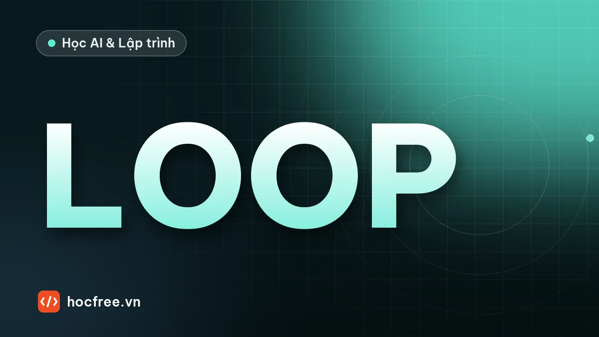

Vòng dữ liệu: chọn ảnh gán nhãn, version dataset, chạy bóng
Sau triển khai: chọn ảnh nào cho QC gán nhãn, ước lượng số lỗi lọt, version dataset bằng mã băm, chạy bóng mô hình mới và kiểm định McNemar.

Học xong bài này, bạn sẽ
- Chọn ảnh cho QC gán nhãn theo ngân sách
- Ước lượng số lỗi lọt bằng lấy mẫu phân tầng
- Version dataset bằng manifest và mã băm
- Chạy bóng mô hình mới và kiểm định McNemar
Nên học trước: Docker cho kỹ sư AI
Nội dung bài viết
Mô hình AI Vision không "xong" vào ngày nghiệm thu. Sản xuất thay đổi: lô vật liệu mới, khuôn mòn, nhà cung cấp đổi quy trình, và một ngày nào đó xuất hiện một kiểu lỗi mới mà mô hình chưa từng thấy. Các bài trước đã có những mảnh ghép: giám sát trôi dữ liệu (logging và giám sát), golden set và so phiên bản mô hình (chọn ngưỡng), kiểm định, đổi mô hình và quay lui an toàn (ứng dụng chạy 24/7). Bài này lấp phần còn lại của vòng: chọn ảnh nào trong hàng chục nghìn ảnh mỗi tuần để QC gán nhãn, đánh phiên bản dataset, và đánh giá mô hình mới bằng chạy bóng (shadow mode) với một phép thử thống kê, trước khi nó được phép quyết định OK/NG.
Code chỉ cần NumPy, SciPy. Các khối nối tiếp nhau trong cùng một file. Mọi "ảnh" được mô phỏng bằng điểm số của mô hình, để tập trung vào quy trình.
1. Một tuần sản xuất: lỗi kiểu mới xuất hiện
Mô hình v1 chấm điểm NG cho mỗi ảnh, ngưỡng 0,5. Tuần này có bốn loại ảnh: OK bình thường; "OK khó" (vân lạ, bụi) mà v1 hay chấm cao; lỗi kiểu cũ v1 đã học; và lỗi kiểu mới v1 chưa từng thấy, nên chấm lưng chừng.
import hashlib
import json
import numpy as np
from scipy import stats
rng = np.random.default_rng(4)
N = 50_000 # ảnh của một tuần sản xuất
NGUONG = 0.5
loai = rng.choice(["OK", "OK_kho", "NG_cu", "NG_moi"], N, p=[0.968, 0.02, 0.008, 0.004]) # lỗi kiểu mới từ tuần này
DIEM = {"OK": (1.2, 18), "OK_kho": (3, 6), "NG_cu": (12, 2), "NG_moi": (3, 4)} # phân phối điểm NG của v1 theo loại
diem_v1 = np.zeros(N)
for k, (a, b) in DIEM.items():
diem_v1[loai == k] = rng.beta(a, b, np.sum(loai == k)) # OK_kho: vân lạ, bụi; NG_moi: v1 chưa từng thấy
la_ng = np.isin(loai, ["NG_cu", "NG_moi"])
bao_ng = diem_v1 >= NGUONG
print(f"{N} ảnh: NG thật {la_ng.sum()} ({loai[la_ng].tolist().count('NG_moi')} lỗi kiểu mới); "
f"v1 báo NG {bao_ng.sum()}, lọt {np.sum(la_ng & ~bao_ng)} (escape {100 * np.mean(~bao_ng[la_ng]):.0f}% số NG), "
f"loại nhầm {np.sum(~la_ng & bao_ng)}")
print(f"escape theo loại: lỗi cũ {100 * np.mean(~bao_ng[loai == 'NG_cu']):.0f}%, lỗi mới {100 * np.mean(~bao_ng[loai == 'NG_moi']):.0f}%")50000 ảnh: NG thật 596 (202 lỗi kiểu mới); v1 báo NG 615, lọt 132 (escape 22% số NG), loại nhầm 151
escape theo loại: lỗi cũ 0%, lỗi mới 65%Lỗi kiểu cũ không lọt, nhưng khoảng hai phần ba lỗi kiểu mới lọt qua. Trên trạm thật, QC không thấy những con số này: ảnh lọt nằm lẫn trong khoảng 49 nghìn ảnh mà v1 báo OK. Câu hỏi là: với ngân sách gán nhãn 200 ảnh mỗi tuần, chọn ảnh nào để phát hiện ra vấn đề?
2. Chọn ảnh để gán nhãn
NGAN_SACH = 200 # QC gán nhãn được 200 ảnh mỗi tuần
def chon(chien_luoc, rng_c):
if chien_luoc == "ngẫu nhiên":
return rng_c.choice(N, NGAN_SACH, replace=False)
if chien_luoc == "sát ngưỡng": # ảnh mô hình phân vân nhất
return np.argsort(np.abs(diem_v1 - NGUONG))[:NGAN_SACH]
if chien_luoc == "điểm cao nhất": # ảnh v1 chắc chắn NG nhất
return np.argsort(-diem_v1)[:NGAN_SACH]
# kết hợp: 120 ảnh sát ngưỡng + 40 ảnh trong vùng dưới ngưỡng [0,25; 0,5) + 40 ảnh ngẫu nhiên
gan = np.argsort(np.abs(diem_v1 - NGUONG))[:120]
vung_duoi = np.setdiff1d(np.nonzero((diem_v1 >= 0.25) & (diem_v1 < NGUONG))[0], gan)
con_lai = np.setdiff1d(np.arange(N), np.r_[gan, vung_duoi])
return np.r_[gan, rng_c.choice(vung_duoi, 40, replace=False), rng_c.choice(con_lai, 40, replace=False)]
print("chiến lược | NG trong 200 ảnh | lỗi kiểu mới | NG v1 bỏ sót tìm thấy | OK bị loại nhầm tìm thấy")
for cl in ("ngẫu nhiên", "điểm cao nhất", "sát ngưỡng", "kết hợp"):
i = chon(cl, np.random.default_rng(0))
print(f"{cl:14s} | {la_ng[i].sum():3d} | {np.sum(loai[i] == 'NG_moi'):3d} |"
f" {np.sum(la_ng[i] & ~bao_ng[i]):3d} | {np.sum(~la_ng[i] & bao_ng[i]):3d}")chiến lược | NG trong 200 ảnh | lỗi kiểu mới | NG v1 bỏ sót tìm thấy | OK bị loại nhầm tìm thấy
ngẫu nhiên | 4 | 0 | 0 | 0
điểm cao nhất | 200 | 1 | 0 | 0
sát ngưỡng | 33 | 32 | 17 | 71
kết hợp | 24 | 24 | 14 | 45- Ngẫu nhiên: với lỗi hiếm cỡ 1%, 200 ảnh ngẫu nhiên chỉ có vài ảnh NG và gần như không gặp lỗi kiểu mới. Không phát hiện được gì.
- Điểm cao nhất: toàn ảnh NG mà mô hình đã bắt đúng, gần như vô ích cho việc học thêm (cách này hay bị dùng vì "dễ gán nhãn").
- Sát ngưỡng (uncertainty sampling): ảnh mô hình phân vân chứa nhiều lỗi kiểu mới, nhiều ca lọt và nhiều ca loại nhầm, tức đúng những ảnh mô hình cần học. Đây là ý tưởng cốt lõi của active learning.
- Kết hợp: phần lớn sát ngưỡng, thêm một phần ở dải điểm thấp hơn ngưỡng (nơi lỗi kiểu mới hay "trốn"), và một phần ngẫu nhiên. Phần ngẫu nhiên tìm được ít lỗi nhưng cần thiết: nó bắt những gì mô hình tự tin sai (điểm rất thấp cho một lỗi thật), thứ sát ngưỡng không bao giờ chọn tới, và nó là mẫu không lệch duy nhất để ước lượng tỉ lệ.
Ngoài điểm số, các nguồn ảnh "đáng gán nhãn" khác: ảnh bị người vận hành ghi đè quyết định, ảnh của sản phẩm khách hàng trả về (tra theo mã sản phẩm, bài MES và truy xuất), ảnh trong khoảng thời gian bộ giám sát báo trôi dữ liệu.
3. Ước lượng số ca lọt: giới hạn của mẫu nhỏ
Muốn biết tuần này lọt bao nhiêu, cần mẫu không lệch trong số ảnh v1 cho qua. Lấy mẫu phân tầng theo dải điểm (rút một số ảnh trong mỗi dải, nhân tỉ lệ NG của mẫu với cỡ dải) thường chính xác hơn lấy ngẫu nhiên đơn giản, vì ca lọt dồn ở dải điểm gần ngưỡng. Mô phỏng 500 tuần để thấy độ dao động:
qua = np.nonzero(~bao_ng)[0] # ảnh v1 cho qua: escape nằm trong đây
DAI = [(0.0, 0.1), (0.1, 0.25), (0.25, 0.5)]
print(f"số ca lọt thật (QC không biết): {np.sum(la_ng[qua])}")
def uoc_luong_phan_tang(rng_u, moi_dai=40):
"""Mỗi dải điểm rút 40 ảnh cho QC kiểm; số lọt ước lượng = Σ (cỡ dải × tỉ lệ NG trong mẫu của dải)."""
tong = 0.0
for lo, hi in DAI:
dai = qua[(diem_v1[qua] >= lo) & (diem_v1[qua] < hi)]
mau = rng_u.choice(dai, moi_dai, replace=False)
tong += len(dai) * la_ng[mau].mean()
return tong
def uoc_luong_ngau_nhien(rng_u, n=120):
mau = rng_u.choice(qua, n, replace=False)
return len(qua) * la_ng[mau].mean()
for ten, ham in (("ngẫu nhiên đơn giản, 120 ảnh", uoc_luong_ngau_nhien), ("phân tầng 3 dải × 40 ảnh", uoc_luong_phan_tang)):
u = np.array([ham(np.random.default_rng(k)) for k in range(500)]) # lặp 500 tuần để xem độ dao động
print(f"{ten:28s}: ước lượng số ca lọt trung bình {u.mean():6.1f}, 90% các tuần nằm trong "
f"[{np.percentile(u, 5):.0f}, {np.percentile(u, 95):.0f}]")số ca lọt thật (QC không biết): 132
ngẫu nhiên đơn giản, 120 ảnh: ước lượng số ca lọt trung bình 122.6, 90% các tuần nằm trong [0, 412]
phân tầng 3 dải × 40 ảnh : ước lượng số ca lọt trung bình 138.9, 90% các tuần nằm trong [27, 346]Cả hai cách cho trung bình gần đúng (không chệch), phân tầng hẹp hơn và không bao giờ ra 0 khi thật ra có hơn một trăm ca lọt. Nhưng cả hai đều dao động gấp nhiều lần giữa các tuần: với lỗi hiếm cỡ phần nghìn, 120 ảnh là quá ít để đo số ca lọt. Kết luận thực tế: dùng ảnh sát ngưỡng để tìm kiểu lỗi mới; cộng dồn mẫu phân tầng qua nhiều tuần để theo dõi xu hướng; còn con số escape (ppm) báo cáo cho khách hàng phải đến từ kiểm tra lại số lượng lớn hoặc golden set đủ cỡ (quy tắc 3/n ở bài chọn ngưỡng).
4. Đánh phiên bản dataset bằng manifest
Mỗi lần thêm ảnh để huấn luyện lại là một phiên bản dataset mới. Không cần công cụ phức tạp: một file manifest liệt kê mã băm SHA-256 của từng ảnh, nhãn, nguồn (vì sao ảnh được chọn), tuần thu thập; mã phiên bản là mã băm của chính manifest. Hai người có cùng mã phiên bản thì chắc chắn có cùng dữ liệu; mô hình nào cũng ghi kèm mã phiên bản dataset đã dùng để huấn luyện (thẻ mô hình ở bài xuất ONNX).
def manifest(ds_anh, ghi_chu):
"""Manifest của một phiên bản dataset: mỗi ảnh một dòng (mã băm nội dung, nhãn, nguồn); mã phiên bản = băm manifest."""
dong = sorted(ds_anh, key=lambda a: a["sha256"])
noi_dung = json.dumps(dong, ensure_ascii=False, sort_keys=True)
return {"phien_ban": hashlib.sha256(noi_dung.encode()).hexdigest()[:12], "so_anh": len(dong),
"theo_nhan": {k: sum(a["nhan"] == k for a in dong) for k in ("OK", "NG")}, "ghi_chu": ghi_chu, "anh": dong}
def gia_anh(i):
"""Thay cho đọc file ảnh thật: mã băm SHA-256 của nội dung file là 'vân tay' của ảnh."""
return {"sha256": hashlib.sha256(f"anh_{i}".encode()).hexdigest(), "nhan": "NG" if la_ng[i] else "OK",
"nguon": "sát ngưỡng" if abs(diem_v1[i] - NGUONG) < 0.2 else "ngẫu nhiên", "tuan": "2026-W43"}
goc = rng.choice(np.nonzero(~la_ng)[0], 900, replace=False).tolist() + rng.choice(np.nonzero(loai == "NG_cu")[0], 100, replace=False).tolist()
v1_ds = manifest([gia_anh(i) for i in goc], "dataset huấn luyện mô hình v1")
chon_tuan = chon("kết hợp", np.random.default_rng(0))
v2_ds = manifest([gia_anh(i) for i in sorted(set(goc) | set(chon_tuan.tolist()))], "v1 + 200 ảnh tuần 43 (chọn kết hợp)")
for m in (v1_ds, v2_ds):
print(f"dataset {m['phien_ban']}: {m['so_anh']} ảnh {m['theo_nhan']} – {m['ghi_chu']}")
them = {a["sha256"] for a in v2_ds["anh"]} - {a["sha256"] for a in v1_ds["anh"]}
print(f"khác biệt: thêm {len(them)} ảnh, bớt {len({a['sha256'] for a in v1_ds['anh']} - {a['sha256'] for a in v2_ds['anh']})} ảnh")dataset 794422760a41: 1000 ảnh {'OK': 900, 'NG': 100} – dataset huấn luyện mô hình v1
dataset 6eaa45692bd1: 1196 ảnh {'OK': 1072, 'NG': 124} – v1 + 200 ảnh tuần 43 (chọn kết hợp)
khác biệt: thêm 196 ảnh, bớt 0 ảnhManifest trả lời ngay những câu hỏi sẽ được hỏi khi có sự cố: mô hình đang chạy học từ những ảnh nào, ảnh này được thêm khi nào và vì sao, giữa hai phiên bản khác nhau gì. Ảnh thì để nguyên trong kho lưu trữ (đặt tên theo mã băm để không bao giờ trùng, không bị ghi đè); manifest nhỏ, đưa vào Git cùng code huấn luyện. Các công cụ như DVC làm việc này tự động hơn, nhưng ý tưởng giống hệt.
5. Chạy bóng: mô hình mới có thật sự tốt hơn?
Mô hình v2 được huấn luyện lại trên dataset mới. Trước khi cho nó quyết định, chạy bóng một tuần: v1 vẫn gửi kết quả cho PLC, v2 chạy song song trên cùng ảnh và chỉ ghi log (cơ chế triển khai ở bài ứng dụng chạy 24/7). Phần lớn ảnh hai mô hình đồng ý; chỉ những ảnh bất đồng cần QC xem lại, và chính chúng quyết định mô hình nào tốt hơn. Phép thử McNemar (dạng chính xác: phép thử nhị thức trên các ca bất đồng) trả lời: số ca v2 đúng nhiều hơn v1 có phải chỉ do may rủi không?
DIEM_V2 = {"OK": (1.2, 18), "OK_kho": (2.5, 7), "NG_cu": (12, 2), "NG_moi": (10, 3)} # v2 đã học lỗi kiểu mới
def cham_diem(loai_arr, bang, rng_s):
d = np.zeros(len(loai_arr))
for k, (a, b) in bang.items():
d[loai_arr == k] = rng_s.beta(a, b, np.sum(loai_arr == k))
return d
# chạy bóng một tuần: v1 vẫn gửi kết quả cho PLC, v2 chạy song song trên cùng ảnh, chỉ ghi log
rng_b = np.random.default_rng(11)
loai_b = rng_b.choice(["OK", "OK_kho", "NG_cu", "NG_moi"], N, p=[0.968, 0.02, 0.008, 0.004])
q1 = cham_diem(loai_b, DIEM, rng_b) >= NGUONG
q2 = cham_diem(loai_b, DIEM_V2, rng_b) >= NGUONG
that_b = np.isin(loai_b, ["NG_cu", "NG_moi"])
print(" v2 báo OK | v2 báo NG")
print(f"v1 báo OK {np.sum(~q1 & ~q2):9d} | {np.sum(~q1 & q2):9d}")
print(f"v1 báo NG {np.sum(q1 & ~q2):9d} | {np.sum(q1 & q2):9d}")
lech = q1 != q2 # chỉ ảnh hai mô hình bất đồng mới cần QC xem lại
dung_v1 = lech & (q1 == that_b)
dung_v2 = lech & (q2 == that_b)
b, c = dung_v1.sum(), dung_v2.sum()
p = stats.binomtest(min(b, c), b + c, 0.5).pvalue # McNemar chính xác trên các cặp bất đồng
print(f"QC xem {lech.sum()} ảnh bất đồng: v1 đúng {b}, v2 đúng {c}; McNemar p = {p:.1e}")
for ten, q in (("v1", q1), ("v2", q2)):
print(f" {ten}: lọt {np.sum(that_b & ~q)} (trong đó lỗi mới {np.sum((loai_b == 'NG_moi') & ~q)}), "
f"loại nhầm {np.sum(~that_b & q)}") v2 báo OK | v2 báo NG
v1 báo OK 49207 | 182
v1 báo NG 150 | 461
QC xem 332 ảnh bất đồng: v1 đúng 59, v2 đúng 273; McNemar p = 4.9e-34
v1: lọt 130 (trong đó lỗi mới 130), loại nhầm 155
v2: lọt 7 (trong đó lỗi mới 6), loại nhầm 64Chỉ 332 trong 50 nghìn ảnh cần QC xem (một khối lượng làm được trong tuần); v2 đúng ở phần lớn chúng, p-value cực nhỏ: v2 tốt hơn không phải do may rủi. Hai dòng cuối là thứ chỉ mô phỏng mới biết (nhãn thật của mọi ảnh): v2 giảm lọt từ 130 xuống 7 và giảm cả loại nhầm. Trên trạm thật, những ảnh hai mô hình cùng sai không lộ ra trong chạy bóng, nên quyết định cuối cùng vẫn cần cả ba cửa:
- Golden set cố định: v2 không được kém v1 ở bất kỳ loại lỗi nào trong golden set (bài chọn ngưỡng), và bổ sung các ảnh lỗi kiểu mới vào phiên bản golden set kế tiếp.
- Chạy bóng: McNemar có ý nghĩa nghiêng về v2, không có kiểu bất đồng đáng lo (ví dụ v2 cho qua một kiểu lỗi mà v1 bắt).
- Phê duyệt và quay lui sẵn sàng: người có thẩm quyền ký, nhật ký thay đổi ghi mã phiên bản mô hình, dataset, ngưỡng; quay lui một lệnh nếu tuần đầu có vấn đề.
Tóm tắt
- Vòng dữ liệu: chọn ảnh → QC gán nhãn → manifest phiên bản mới → huấn luyện lại → golden set → chạy bóng → phê duyệt, triển khai → tiếp tục chọn ảnh.
- Chọn ảnh: sát ngưỡng để tìm điều mô hình chưa biết; thêm dải dưới ngưỡng và một phần ngẫu nhiên; thêm ảnh bị ghi đè, hàng trả về, vùng trôi dữ liệu.
- Mẫu nhỏ không đo được tỉ lệ lọt của lỗi hiếm; dùng để phát hiện và theo dõi xu hướng, không để báo cáo ppm.
- Manifest với mã băm từng ảnh và mã phiên bản; mô hình nào cũng ghi dataset đã dùng.
- Chạy bóng: chỉ ảnh bất đồng cần QC; McNemar cho biết chênh lệch có thật không; kết hợp với golden set và phê duyệt.
Bài tập
Bài 1. Cần bao nhiêu ca bất đồng?
Nếu v2 đúng 60% hoặc 70% số ca bất đồng, cần bao nhiêu ca bất đồng để McNemar có p < 0,05? Liên hệ: khi hai mô hình gần nhau, chạy bóng cần kéo dài bao lâu?
Xem đáp án
for ty_le_v2 in (0.6, 0.7):
for so_bat_dong in (20, 50, 100, 200):
k = int(round(ty_le_v2 * so_bat_dong)) # v2 đúng k trong số các ca bất đồng
p = stats.binomtest(so_bat_dong - k, so_bat_dong, 0.5).pvalue
print(f"v2 đúng {100 * ty_le_v2:.0f}% ca bất đồng, {so_bat_dong:3d} ca: p = {p:.3f} → "
f"{'đủ bằng chứng (p < 0,05)' if p < 0.05 else 'chưa đủ'}")v2 đúng 60% ca bất đồng, 20 ca: p = 0.503 → chưa đủ
v2 đúng 60% ca bất đồng, 50 ca: p = 0.203 → chưa đủ
v2 đúng 60% ca bất đồng, 100 ca: p = 0.057 → chưa đủ
v2 đúng 60% ca bất đồng, 200 ca: p = 0.006 → đủ bằng chứng (p < 0,05)
v2 đúng 70% ca bất đồng, 20 ca: p = 0.115 → chưa đủ
v2 đúng 70% ca bất đồng, 50 ca: p = 0.007 → đủ bằng chứng (p < 0,05)
v2 đúng 70% ca bất đồng, 100 ca: p = 0.000 → đủ bằng chứng (p < 0,05)
v2 đúng 70% ca bất đồng, 200 ca: p = 0.000 → đủ bằng chứng (p < 0,05)Chênh lệch càng nhỏ, càng cần nhiều ca bất đồng: 60/40 cần khoảng 200 ca, 70/30 khoảng 50. Nếu mỗi tuần chỉ có vài chục ca bất đồng, chạy bóng một tuần chưa đủ để kết luận v2 tốt hơn v1 một chút; hoặc chạy lâu hơn, hoặc chấp nhận rằng hai mô hình tương đương và quyết định theo các tiêu chí khác (tốc độ, golden set, lỗi kiểu mới).
Bài 2. Tuần đầu sau khi phát hiện lỗi kiểu mới
Chiến lược "sát ngưỡng" vừa tìm ra 30 ảnh của một kiểu lỗi mới mà v1 cho qua khoảng hai phần ba. Huấn luyện lại và chạy bóng mất ít nhất hai tuần. Trong hai tuần đó, làm gì để không giao thêm hàng lỗi?
Xem đáp án
(1) Báo QC và khách hàng (nếu hợp đồng yêu cầu), khoanh vùng lô sản xuất từ khi lỗi xuất hiện, kiểm tra lại hàng tồn. (2) Biện pháp tạm thời trên trạm: hạ ngưỡng của v1 xuống để bắt phần lớn lỗi kiểu mới (chấp nhận overkill tăng, có biên bản và thời hạn), hoặc thêm một luật rule-based nhắm đúng đặc điểm của lỗi mới, hoặc tăng kiểm tra tay cho dải điểm 0,25–0,5. Đo trước tác động của từng biện pháp lên overkill bằng dữ liệu tuần vừa rồi. (3) Tìm nguyên nhân gốc ở công đoạn sản xuất (lỗi mới thường có nguyên nhân mới: khuôn, vật liệu, máy). (4) Song song: gán nhãn, huấn luyện v2, golden set mới có lỗi kiểu mới, chạy bóng, rồi gỡ biện pháp tạm thời khi v2 được duyệt.
Bài tiếp theo: Dự án chặng 14: đóng gói ứng dụng vision chạy 24/7, nơi cơ chế đổi mô hình, chạy bóng và quay lui được hiện thực thành code.
Nguồn tham khảo: Settles (2009), Active Learning Literature Survey (University of Wisconsin–Madison); McNemar (1947), Note on the sampling error of the difference between correlated proportions or percentages, Psychometrika; SciPy: binomtest; Cochran, Sampling Techniques (lấy mẫu phân tầng); DVC: Data Version Control.
Bài tập thực hành
- S
- o
- s
- á
- n
- h
- b
- ố
- n
- c
- h
- i
- ế
- n
- l
- ư
- ợ
- c
- c
- h
- ọ
- n
- ả
- n
- h
- ,
- t
- ạ
- o
- m
- a
- n
- i
- f
- e
- s
- t
- h
- a
- i
- p
- h
- i
- ê
- n
- b
- ả
- n
- d
- a
- t
- a
- s
- e
- t
- ,
- c
- h
- ạ
- y
- b
- ó
- n
- g
- v
- 2
- s
- o
- n
- g
- s
- o
- n
- g
- v
- 1
- v
- à
- t
- í
- n
- h
- p
Làm xong bài tập mới chuyển sang bài tiếp theo: tự viết code là cách duy nhất để nhớ lâu.